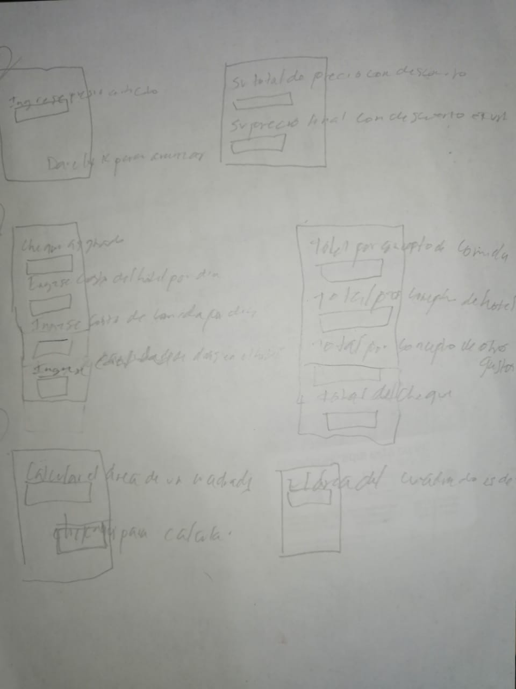
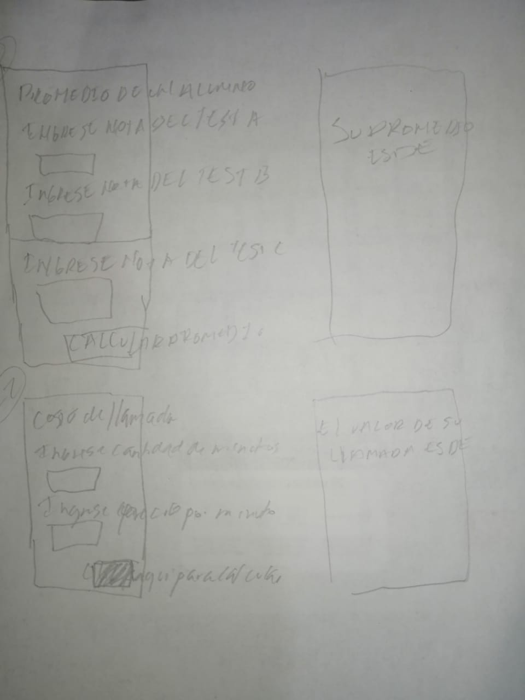

diagramas de flujos
Un diagrama de flujo es un diagrama que describe un proceso, sistema o algoritmo informático. Se usan ampliamente en numerosos campos para documentar, estudiar, planificar, mejorar y comunicar procesos que suelen ser complejos en diagramas claros y fáciles de comprender. Los diagramas de flujo emplean rectángulos, óvalos, diamantes y otras numerosas figuras para definir el tipo de paso, junto con flechas conectoras que establecen el flujo y la secuencia. Pueden variar desde diagramas simples y dibujados a mano hasta diagramas exhaustivos creados por computadora que describen múltiples pasos y rutas.

|

|